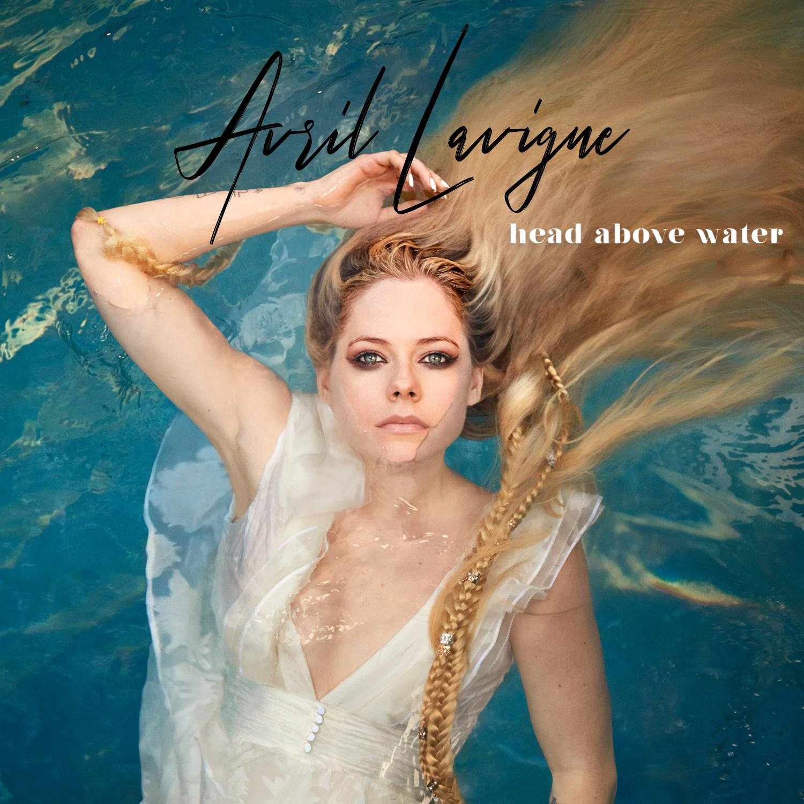
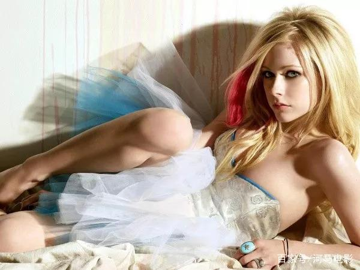
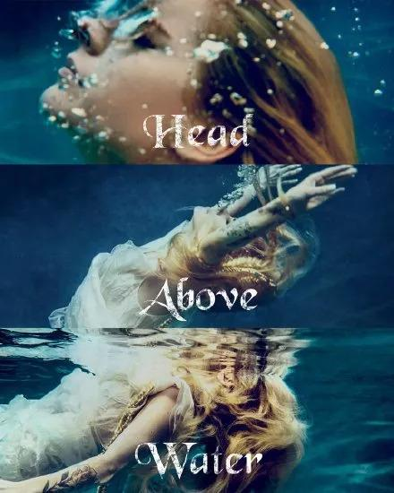
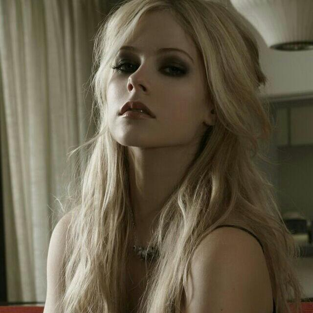
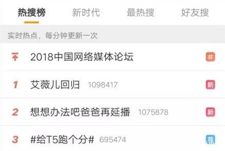
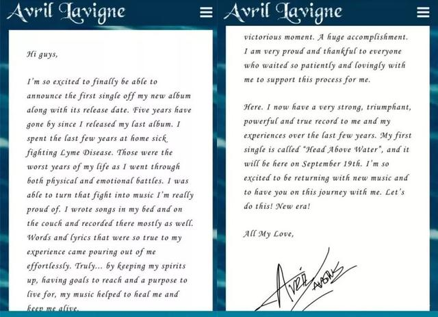
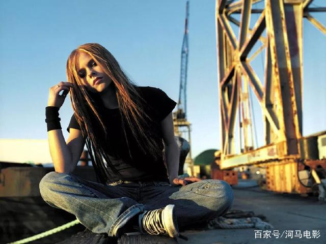
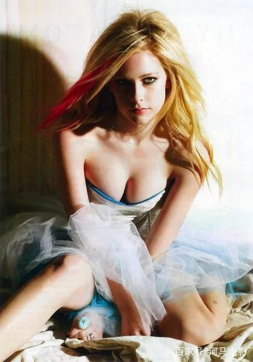
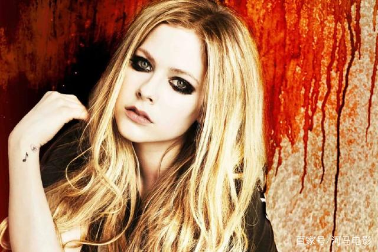
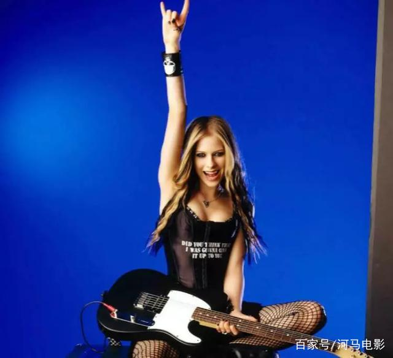

在人手一部MP3的年代，有个人的名字出现率极高。
多少人都是因为她，掉进了欧美音乐圈，从此再也出不来。
16岁出道，18岁成名，21岁结婚，29岁患病，34岁重新开始。
即便因病隐退，她也从未被粉丝忘记。
她，就是“摇滚小天后”——艾薇儿。

今天凌晨，艾薇儿在社交媒体上晒出一张宣传图，宣布自己的全新单曲将于9月19号正式释出。
时隔四年，这是她回归的第一曲。

这首歌是艾薇儿在生病期间创作的，讲述了她和疾病斗争的经历。
在病得最重的时候，她感觉像沉到了水底深处，拼命想浮出水面呼吸一口新鲜空气。
自2013年患上莱姆病起，艾薇儿就一直受病痛折磨，创作进度大打折扣。
粉丝们翘首以盼，等来的却是偶像隐退的消息。
这让很多人在倍感惋惜的同时，十分心疼艾薇儿。
对一个原创歌手来说，不能自由地创作音乐，这种折磨比病痛更难以忍受。

好在，她很顽强，没有向病痛屈服。
尽管让我们久等了，但她还是归来了！
而我们也没有忘记这个喜欢化烟熏妆的“坏女孩”。
当艾薇儿宣布回归时，微博炸了！
实时热搜冲到了第一名。

这是折磨艾薇儿四年之久的疾病，是一种以蜱为媒介的螺旋体感染性疾病。 早期患者适当接受抗生素治疗，几周便可痊愈。 偏偏艾薇儿属于小部分案例中的一员，她得了“慢性莱姆病”。 长期肌肉酸痛、疲倦，还伴随着关节炎等症状出现。这一次，除了宣布回归，艾薇儿还给粉丝写了一封长信。 信里不仅分享了她与病痛战斗的故事，还解释了新单创作的心得。 可以说，是个很暖心的偶像了。

曾经有段时间，一句话特别火：
“我纹身、抽烟、喝酒、说脏话，但我知道我是好姑娘。”
很多人都认为这是艾薇儿说的，实际上，她本人从未说过这句话。
不过，她却是以“坏女孩”的形象走进了人们的视野中。

曾几何时，“艾薇儿”不再是一个名字，她变成一个现象。
标志性的烟熏妆、挑染的五彩发色、令人窒息的侧颜、独特的高亢嗓音。

她不仅仅是一位天赋过人的歌者，更是一个让万千青少年疯狂效仿的偶像。
做音乐，态度最重要。
艾薇儿的态度就是不轻易向世界妥协，永远做自己。

有人认为摇滚是叛逆，是暗黑，是不循规蹈矩。 艾薇儿却让我们看到了，摇滚是拥有一颗包容且有爱的心。 面对挚爱的音乐，她始终没有放弃，即使疾病缠身，也坚持发声。 在给粉丝的信里，她用炙热又激动的语气写下这样一段话：
我比任何时候都期望能回到舞台上，抱着我的吉他，在舞台上肆意奔跑，唱着我的歌曲，环游全世界去看我的歌迷。

我想说，艾薇儿不只代表一个时代，她还是无数人青春的回忆。
中学时代，MP3里除了周杰伦，出现最多的名字就是她了。
如今，重生的凤凰得以涅槃，只等她吟出新生的鸣叫。
天后不在，那颗热血摇滚的心还在。
不论过去多久，她都是我的欧美初心，永远的摇滚天后！